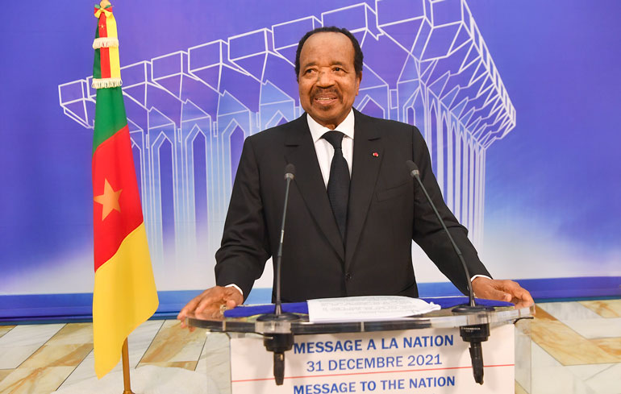
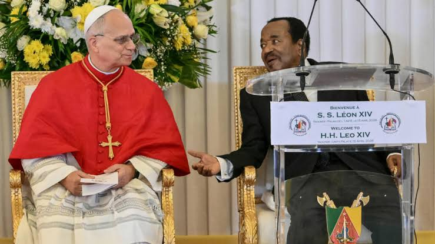

PAUL BIYA( born ferbuary 13, 1933, in Mvomeka'a) has served as the president of cameroon since November 6,1982. He is the second head of state of cameroon's history and currently the world's oldest acting head of state and second-longest-serving president in AFRICA
Biya pursued primary and secondary Education in cameroon before moving to France to complete his higher education. He holds several degrees,including
After returning to cameroon in 1962, biya steadily rose through the bureaucratic and Political ranks
Paul Biya became president of Cameroon on November 6, 1982,Suceeding Ahmadou Ahidjo. During his presidency, he has overseen the country's political, economic, and social development. His administration has focused on national unity, education, and maintaining stability within the nation.
Some notable achievements during Paul Biya's leadership include improvements in road infrastructure, expansion of educational institutions, growth in telecomunications, and efforts to strengthen regional and international cooperation. His government has also supported various development projects aimed at improving living standards.
Throughout presidency Paul Biya has face several Challenges, including economic difficulties unemployement, curruption concerns, and security of the country. His administration has also faced criticism regarding governance, political reforms, and human rights matters.
Paul Biya's legacy remains a subject of discussion among Cameroonians and observers around the world. Supporters credit him with maintaining national stability and promoting development, while critics argue that further reforms are needed. His long tenure has made him one of the most influential figures in Cameroon's modern history.

Cameroon welcomed important international visitors during PAUL BIYA's presidency, including visits from catholic church leaders. These event promoted peace, dailogue, and cooperation. One of them was Pope Leo XIV who delivered several powerful messages of peace, anti-curruption, and youth empowerment to the public and political leaders.
Addressing Cameroonians authorities and civil society at the Unity Palace in Yaounde, the pontiff explicitly denounced curruption and abuses of power.
While celebrating a massive open-air mass for the public at Japoma Stadiumin Douala, the Pope addressed the country's youth, utging them to stay,fight corruption, and build their nation.